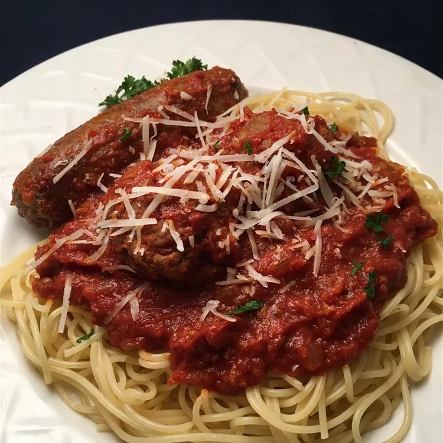

Spaghetti and meatballs is an Italian-American pasta dish consisting of spaghetti, tomato sauce, and meatballs. Originally inspired by similar dishes from southern Italy, the modern version of spaghetti and meatballs was developed by Italian immigrants in New York City. It grew in popularity during the first half of the 20th century and is today considered a classic in Italian-American cuisine both in New York City and the rest of the U.S
In a large stock pot, heat olive oil over medium heat. Add Italian sausage, beef chunks, sausage links, onion, and garlic: cook and stir until meat is thoroughly done. Stir in tomato paste, crushed tomatoes, bay leaves, and cinnamon. Season with salt and pepper to taste. Simmer sauce over low heat for 1 hour.
In a large bowl, combine the ground chuck beef, eggs, bread, Romano cheese, salt and pepper, and a pinch of parsley flakes. Shape into golf ball size meatballs.
Pour vegetable oil into a large skillet. Add meatballs, and cook over medium heat until lightly browned. Place meatballs in spaghetti sauce, and simmer for 1 1/2 to 2 hours.
Cook pasta in boiling, salted water until al dente. Drain well, and transfer to a large bowl. Stir 1 cup sauce into the noodles to help prevent sticking.
Serve sauce with meatballs over pasta.